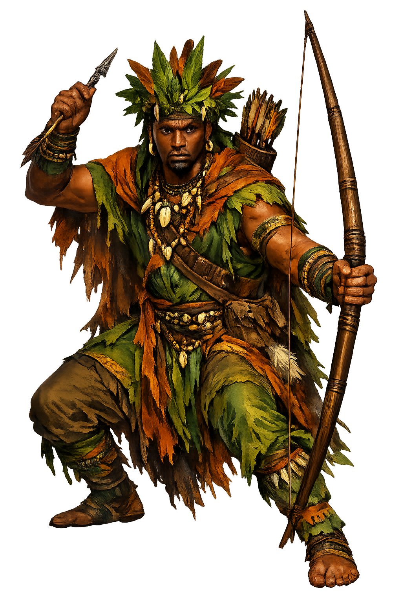

The Authentic Orthography
Hunting, Forest, Justice · The Single Arrow · Lord of the Forest Hunt

Unicode restoration and ASCII comparison
Ọ̀ṣọ́ọ̀sì
The name in its original Yoruba form. Ọṣọọsì (Ọ̀ṣọ́ọ̀sì) is attested in the source tradition — “The hunter — orisha of the hunt, the forest, and deliberate strategy (standard Yoruba Ọ̀ṣọ́ọ̀sì; Cuban Ochosi, Brazilian Oxóssi)”. Its emphatic consonants and palatal/retroflex sibilants carry the full phonetic and orthographic weight of the source tradition.
ochosi
Reduced to plain ochosi, the name loses everything that made it specific: emphatic consonants and palatal/retroflex sibilants. What remains is an ASCII string that machines can parse but that no longer speaks with its original voice.
Ọṣọọsì
The Unicode restoration recovers what ASCII flattened. Ọṣọọsì restores emphatic consonants and palatal/retroflex sibilants, returning the name to its original written dignity. The domain encodes to Punycode, but the browser displays the truth.
Ọṣọọsì.com → xn--s-hga147tdmaba.com
The non-ASCII characters in Ọṣọọsì are encoded while the ASCII remains visible. To the DNS, it is Punycode. To humanity, it is Ọṣọọsì.
How Ọṣọọsì travels from ancient script to the modern URL
Yoruba theonym of the hunter orisha; associated with the forest, the bow and arrow, and deliberate strategy. Brazilian Candomblé Oxóssi, Cuban Santería Ochosi.
Hunting, forest, strategy, justice, and provision; the orisha of the hunt.
The Unicode restoration Ọṣọọsì uses underdots and a grave tone mark that are registrable in .com.
How Ọṣọọsì was spoken
The Hunt, the Forest, and the Justice of the Patient Shot
Ọṣọọsì is the hunter orisha: lord of the forest, master of the bow, and patron of strategy — the one whose praise-poems say he kills with a single arrow, because he has learned what every hunter must learn: wait.
One shaft, never wasted: his oríkì hail the hunter who does not need to shoot twice.
His emblem across three continents — the hunter's bow, carved on his shrines and sung in his names.
His cathedral and his larder: the deep bush where game, medicine, and danger all live.
In the diaspora he stands with the accused: the orisha of right judgment and the patient case.
Stories of Ọṣọọsì
Ọṣọọsì's mythology lives in praise-poetry and divination verse — the oríkì that greet him, the Ifá corpus that ranks him among the orisha, and the itan, the sacred stories of the diaspora houses that still tell of the one arrow.
His praise-poems are the hunt distilled: the oríkì greet Ọ̀ṣọ́ọ̀sì as the hunter who kills with a single arrow — the archer whose patience is so complete that the forest gives him what it denies the noisy and the hasty. In the Candomblé houses of Brazil the same idea opens his festivals: Oxóssi, rei das matas, king of the forest, the provider whose one shot feeds the whole town. The oríkì tradition is not ornament here; it is the liturgy of competence.
In the Ifá divination corpus — the 256 odù and their thousands of memorized verses — the divine hunter walks as provider and strategist: the orisha who knows the paths of the bush as the babaláwo knows the paths of the palm nuts. Bascom's fieldwork in Ife and among Cuban practitioners recorded his place in the diviners' world; Idowu's theology of the orisha sets him among the ministers Olódùmarè appointed over creation's wild half. Wherever Ifá is consulted, the forest has a spokesman.
In Cuban Santería, Ochosi stands with the Guerreros — the Warriors: Eleguá who opens the road, Ogún who clears it with iron, Ochosi who hunts its game, and Osún who keeps watch — the first orishas a practitioner receives. His Cuban face is the justice-bringer: devotees call on him in court cases and wrongful accusations, the hunter whose arrow finds the truth the way it finds the heart of the deer. The hunt and the lawsuit are one skill: tracking.
In Brazil, Oxóssi was paired with São Sebastião — the Roman soldier shot through with arrows for refusing to renounce his faith, his iconography a perfect mirror for the archer orisha — and the saint's feast of January 20 became Oxóssi's own. In Umbanda his name heads the whole linha de Oxóssi, the line of the caboclo spirits, the indigenous forest guides. Three nations, three spellings, one bow.
Ọṣọọsì teaches the economics of the one shot: that most waste is noise, that readiness looks like stillness, and that the forest feeds the one who has already done the waiting. In an age of volume, he is the orisha of the opposite — the deliberate act, the counted arrow, the case prepared so well it needs to be made only once.
Enter Extended Lore